Every photograph on this site, who made it, and the licence it is used under.
| Used for | Author | Licence | ||
|---|---|---|---|---|
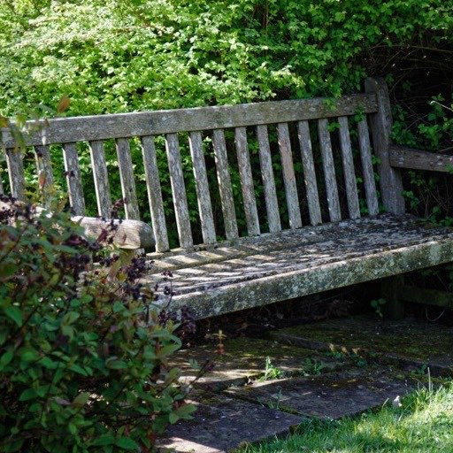 | Wrought-Iron Bench Garden lawn bench Waterperry Gardens Oxfordshire England | Acabashi | CC BY-SA 4.0 | Source |
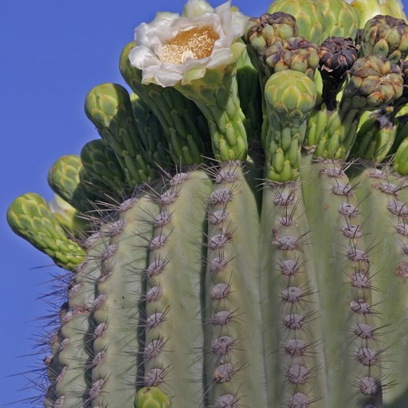 | Flowering Saguaro Sahuaro in bloom 2 | Tomascastelazo | CC BY-SA 3.0 | Source |
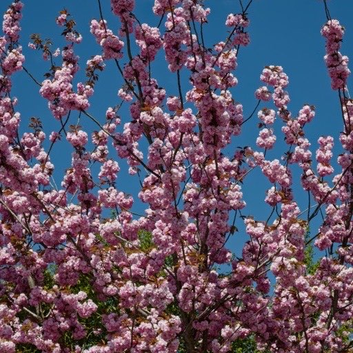 | Cherry Blossom Tree Prunus pink blossom Japanese flowering cherry Stansted Mountfitchet Essex 02 | Acabashi | CC BY-SA 4.0 | Source |
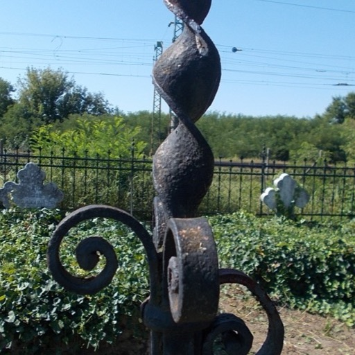 | Iron Plot Fence Irsa cemetery, wrought iron fence detail, 2020 Albertirsa | Globetrotter19 | CC BY-SA 3.0 | Source |
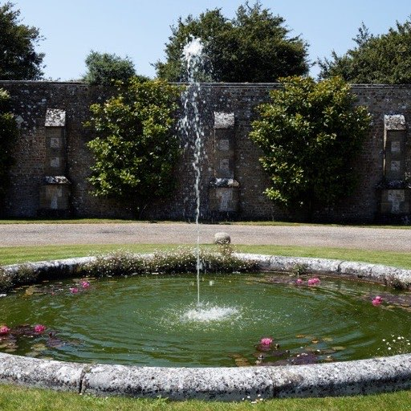 | Stone Fountain Courtyard pond water fountain at Parham House, West Sussex, England | Acabashi | CC BY-SA 4.0 | Source |
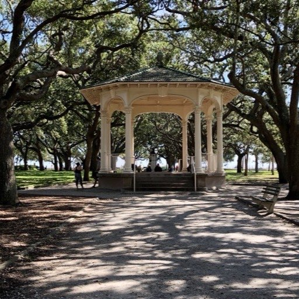 | White Gazebo Gazebo, White Point Garden, South of Broad, Charleston, SC (49550073356) | Warren LeMay from Covington, KY, United States | CC0 | Source |
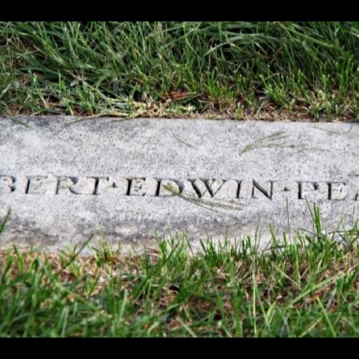 | Classic Granite Headstone Grave of Robert Peary - closeup of headstone - Arlington National Cemetery - 2011 | Tim1965 | CC BY-SA 3.0 | Source |
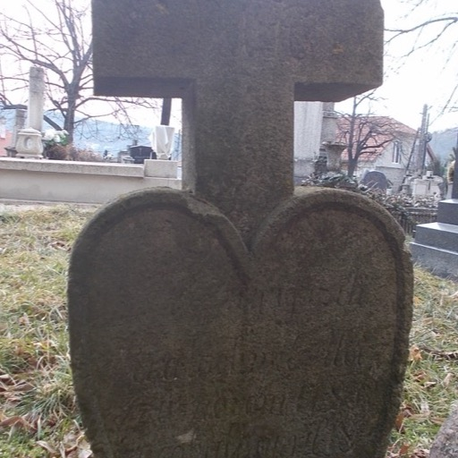 | Heart Marble Marker Friedhof, Herzförmiger Grabstein, 2025 Pilisszentlászló | Globetrotter19 | CC BY-SA 4.0 | Source |
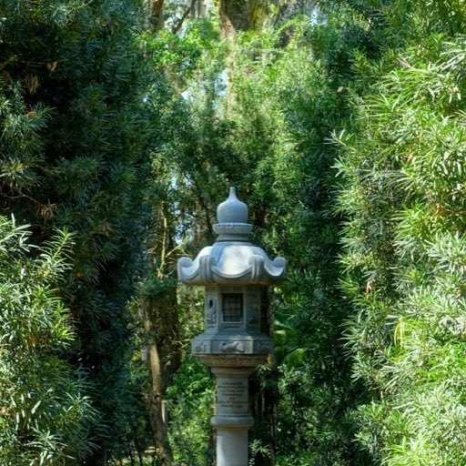 | Eternal Flame Lantern Japanese Stone Lantern - Bok Tower Gardens - DSC02329 | Daderot | CC0 | Source |
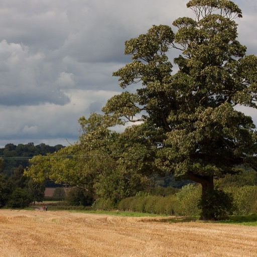 | Memorial Oak Tree Mature oak tree - geograph.org.uk - 4141847 | Pauline E | CC BY-SA 2.0 | Source |
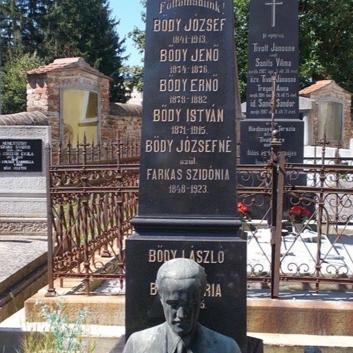 | Marble Obelisk Bődy family grave obelisk, 2020 Zalaegerszeg | Globetrotter19 | CC BY-SA 3.0 | Source |
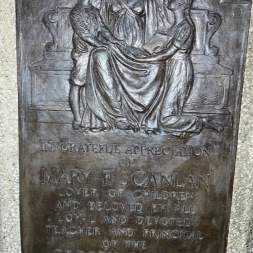 | Engraved Bronze Plaque Scanlan Memorial Bronze Plaque by Cyrus Dallin | AndrewTJay | CC0 | Source |
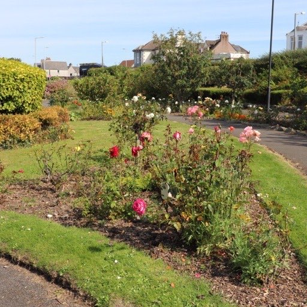 | Rose Garden Bed Rose Bed, Gardens of Friendship - geograph.org.uk - 7250340 | Billy McCrorie | CC BY-SA 2.0 | Source |
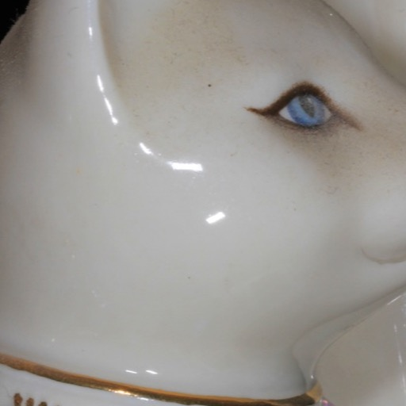 | Sleeping Cat Statue Cat Statue (24383931008) | Judy Gallagher | CC BY 2.0 | Source |
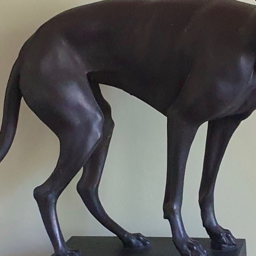 | Faithful Companion Statue Bronze dog statue-Goethes Wohnhaus | Yair-haklai | CC BY-SA 4.0 | Source |
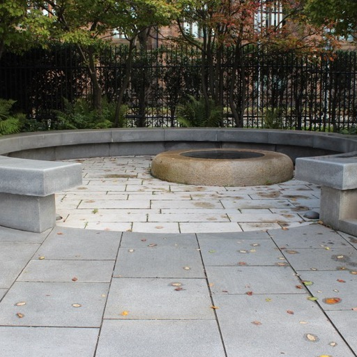 | Wildflower Patch Wildflower Meadow, Liverpool Hope Uni 2 | Rodhullandemu | CC BY-SA 4.0 | Source |
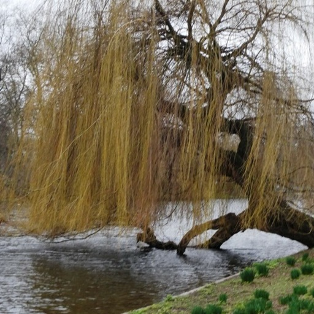 | Weeping Willow Weeping willow tree, St. James's Park, London - geograph.org.uk - 7702579 | pam fray | CC BY-SA 2.0 | Source |
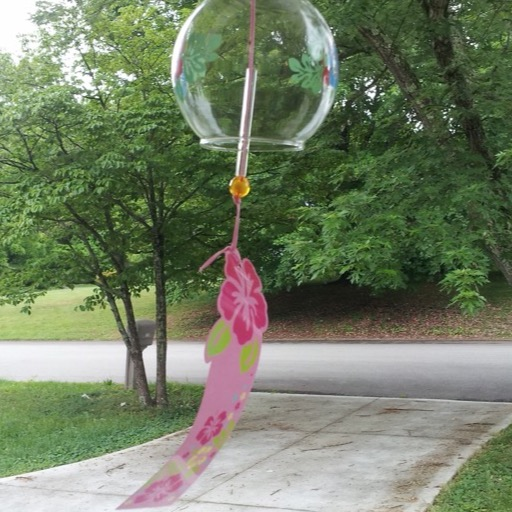 | Silver Wind Chimes Furin japanese wind chime | Charity Davenport | CC0 | Source |
| Used for | Author | Licence | ||
|---|---|---|---|---|
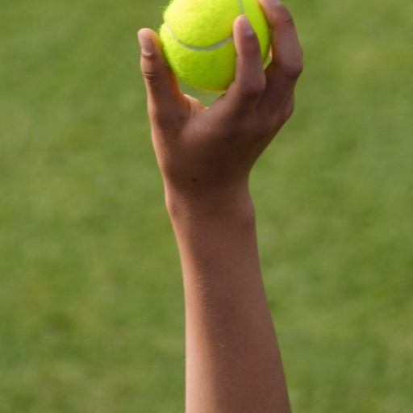 | Favorite Ball Ball boy or girl offering a tennis ball to the server | Carine06 (Flickr) | CC BY-SA 2.0 | Source |
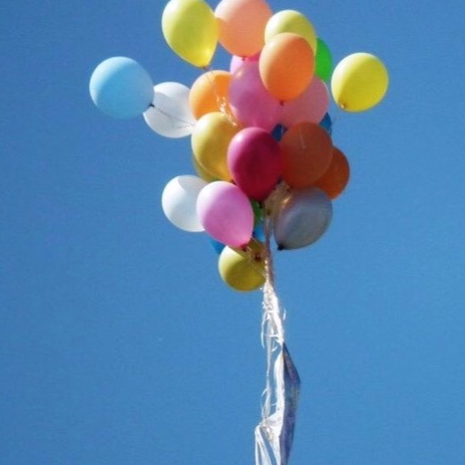 | Remembrance Balloon Toy balloon in the sky of Eastern Siberia | Oleg Bor | CC BY-SA 4.0 | Source |
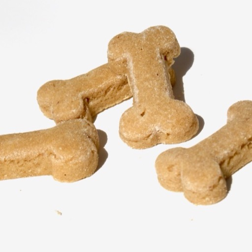 | Treat Offering Bone Dog Treats | Megan Marrs (Flickr) | CC BY 2.0 | Source |
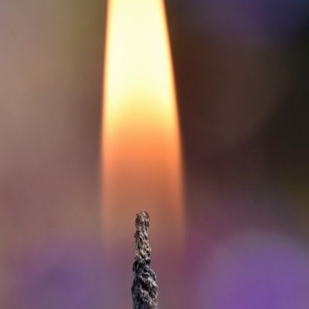 | Vigil Candle A lit candle | Conall (Flickr, Downpatrick, Northern Ireland) | CC BY 4.0 | Source |
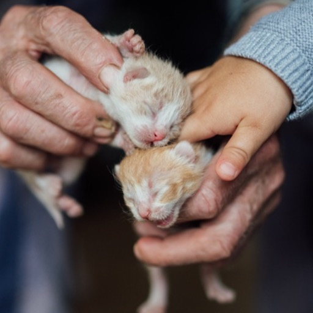 | Shelter Donation Cute kittens being held by an adult and child in a cozy indoor setting during daylight hours | Shixart1985 | CC BY 2.0 | Source |
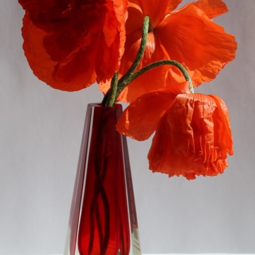 | Fresh Flowers Poppies bouquet 2017 G1 | George Chernilevsky | Public domain | Source |
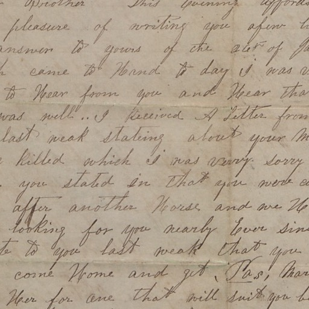 | Letter to a Friend Handwritten Letter to D. H. Cook from Carmie Cook (page 1) | Stanly County Museum / North Carolina Digital Heritage Center (via DPLA) | Public domain | Source |
| Seasonal Wreath Fall foliage wreath on door | Jez Timms (Unsplash) | CC0 | Source |
| Used for | Author | Licence | ||
|---|---|---|---|---|
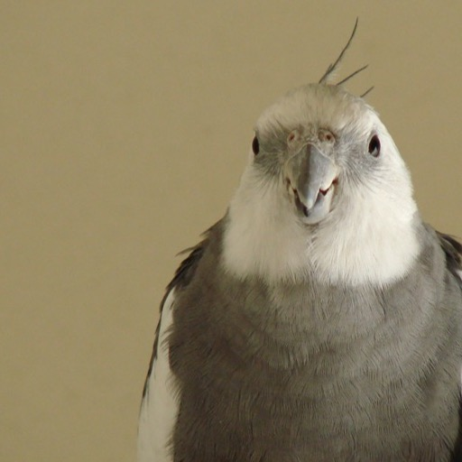 | Bird portrait Nymphicus hollandicus - pet - grey colour mutation-8a | *~Dawn~* (Flickr) | CC BY 2.0 | Source |
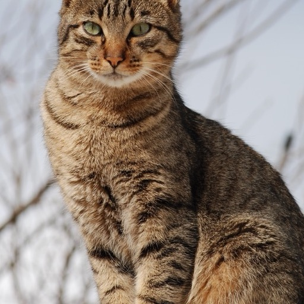 | Cat portrait Cat November 2010-1a | Alvesgaspar | CC BY-SA 3.0 | Source |
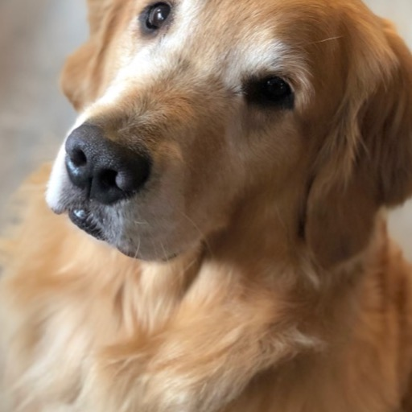 | Dog portrait A Portrait - Watson the Golden - Sit | Pete Markham (Flickr) | CC BY-SA 2.0 | Source |
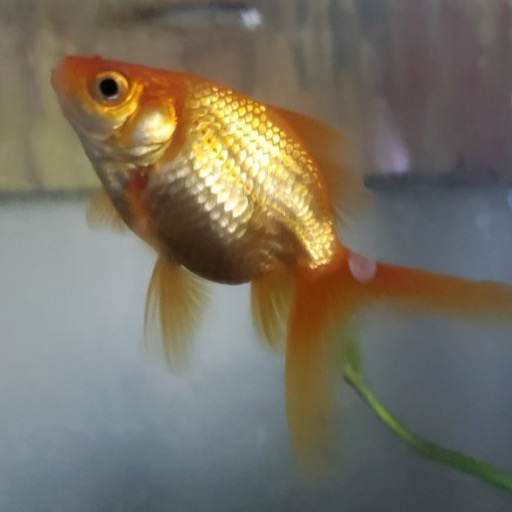 | Fish portrait Fantail Goldfish Carrot | Ry362 | CC BY-SA 3.0 | Source |
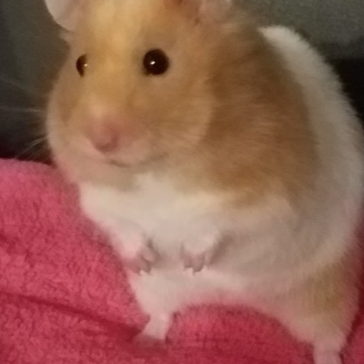 | Small pet portrait Syrian hamster on blanket | MarketBoiCYM | CC BY-SA 4.0 | Source |
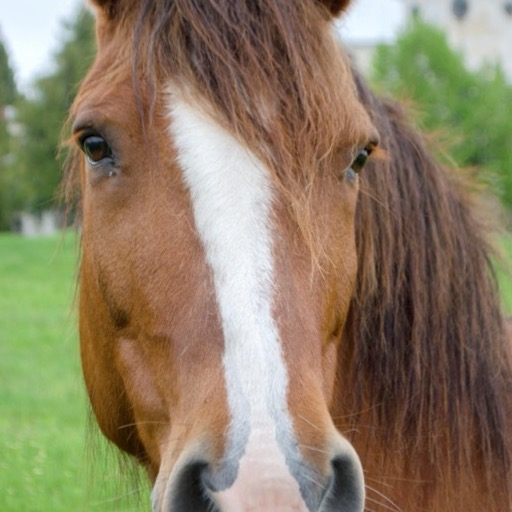 | Horse portrait Horse portrait, Ukraine | Star61 | CC BY-SA 4.0 | Source |
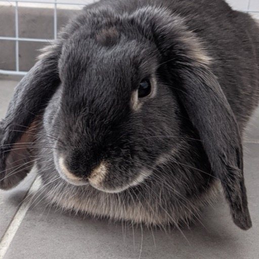 | Rabbit portrait Domestic mini lop rabbit lying down 02 | Hugo Bayet | CC BY-SA 4.0 | Source |
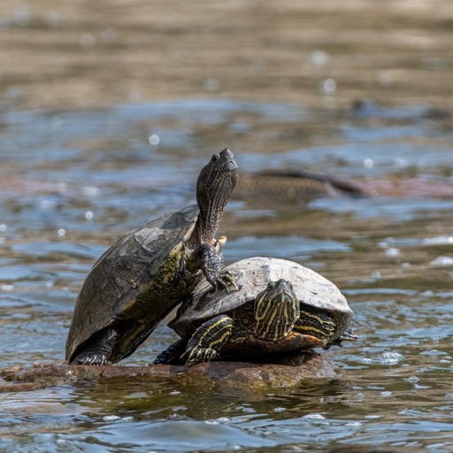 | Turtle portrait Red-eared Slider Turtle | Creepanta | CC BY-SA 4.0 | Source |
The globe uses NASA Blue Marble surface, cloud, night-lights, normal and specular maps, together with a lunar surface map. NASA imagery is in the public domain.
Rainbow Bridge Valley, its materials and textures, every interface icon, the species silhouettes and the rainbow marks are generated or drawn for this project and are not third-party works.